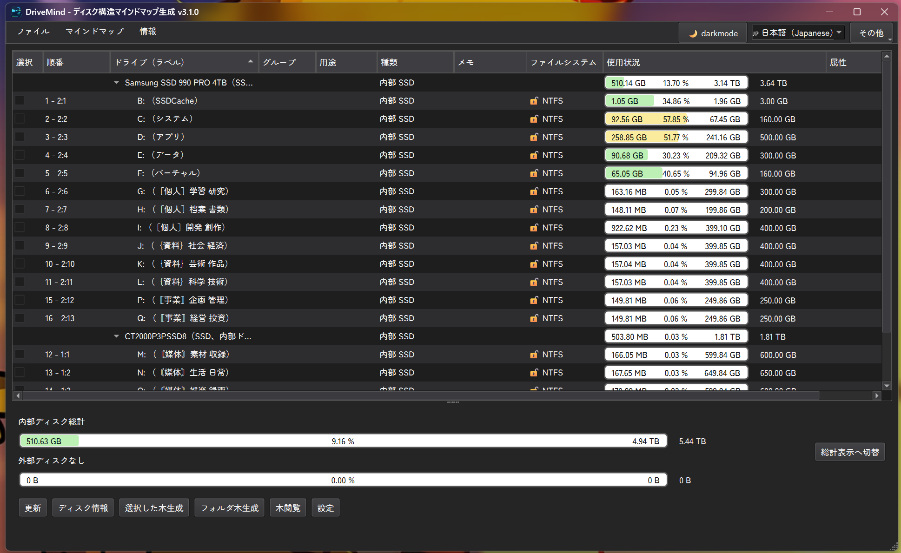

ディスク・パーティション管理
内部・外部ディスク、容量、空き領域、ファイルシステム、BitLocker状態を一覧で確認します。
DriveMindは、Windowsの内部・外部ディスクとパーティションを確認し、選択したドライブや任意フォルダをDesktopNaotu用の.kmマインドマップとして出力するデスクトップアプリです。

容量確認からフォルダ構造の可視化まで、ディスクを整理するときに必要な操作をまとめています。
内部・外部ディスク、容量、空き領域、ファイルシステム、BitLocker状態を一覧で確認します。
選択したパーティションまたは任意フォルダから、DesktopNaotu用.kmを生成します。
画像・音声・ビデオ・アーカイブ・プログラムなど、種類別の容量をDoughnut Chartで確認します。
パーティションごとに役割やメモを保存し、色付きグループで整理できます。
UUID / Serialは初期状態で非表示。必要なときだけ画面上に表示できます。
darkmode / lightmodeに加え、日本語・英語・中国語・韓国語のGUIを利用できます。
画像をクリックすると、拡大表示できます。
機能追加と安定性改善を継続しています。
v3.3.0 — Latest
ファイル所在フォルダ・OS属性表示を修正し、S.M.A.R.T情報ツリー、ドライブボタン、UUID非表示を追加。
v3.2.0
ディスク取得のフォールバックを強化し、BitLocker未使用ドライブの誤表示を改善。
v3.1.0
ファイルリスト右クリック操作、画像・アーカイブ分類、NTFSバージョンとBitLockerアイコンを追加。
v3.0.0
Brandスプラッシュ、多言語README、最新スクリーンショットを追加。
v2.3.0
サイト内でも使われているlight/darkの切り替え方針をアプリ側で安定化。
ダウンロード後は、ディスクを確認して、対象を選び、マップを生成するだけです。
DriveMindを起動し、必要に応じて「更新」でディスク情報を再取得します。
マップに含めるパーティションを左端のチェックボックスで選択します。
「選択した木生成」または「フォルダ木生成」で.kmを出力します。
「木閲覧」から最近のマップ、または任意マップを開きます。
最新リリースページから、公開ファイル・リリースノート・ソースコードを確認できます。
DriveMindは、ディスクとフォルダ構造を分かりやすく整理するために開発されています。
{kind=link}
{kind=link}
{kind=link}
{kind=link}
{kind=link}
{kind=link}
{kind=link}